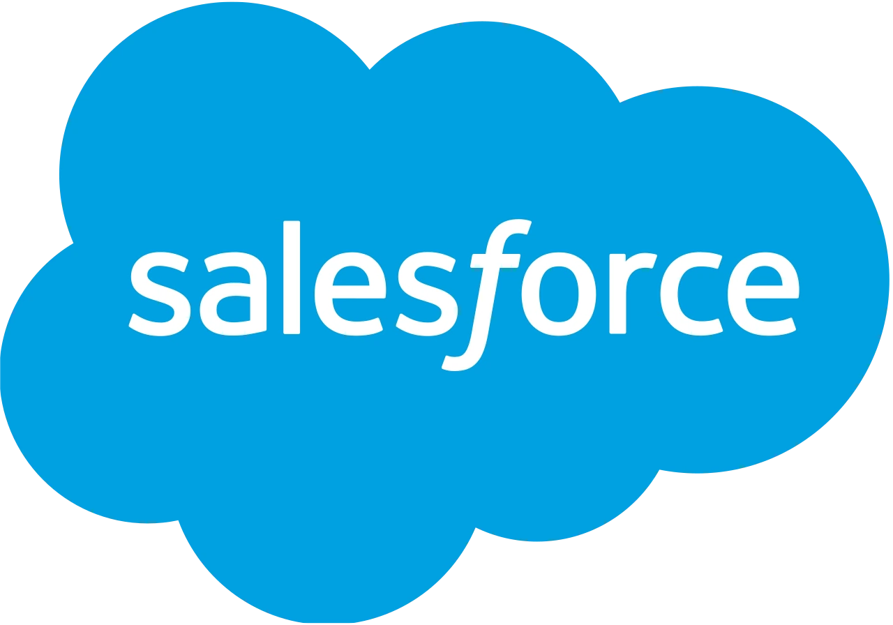
AI CRM and Email
Following a major reorganization, our team designed a desktop email product from scratch to fill key gaps in the Salesforce ecosystem and optimize the core sales workflow.
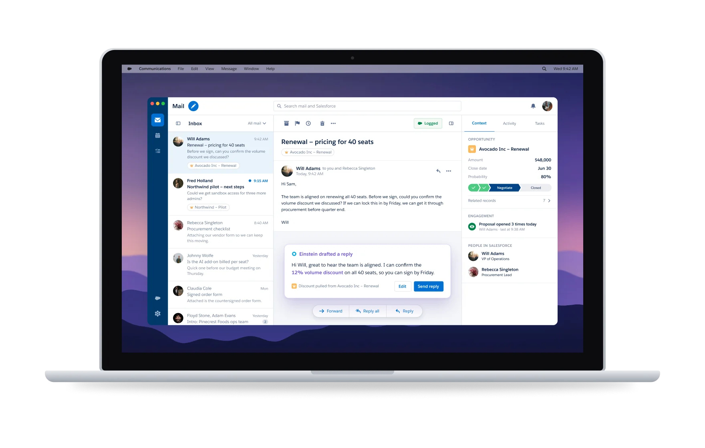
Project at a glance
Sales reps lived in their inbox. Their deals lived in Salesforce.
Working with the product manager, we researched the current landscape of email products to see where we stood. Most sales reps were using Outlook and Gmail. While there were niche products that catered to sales, none could provide the deep CRM integrations that we could.
- 22%of sales reps could spend more than 3 hours a day closing deals
- 8 monthsfrom market research to development
Where sales reps were already working
-
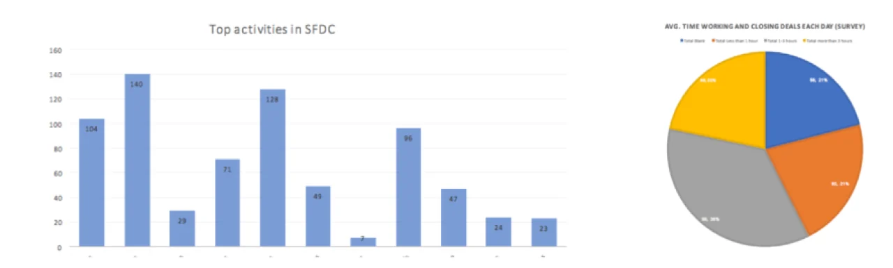
-
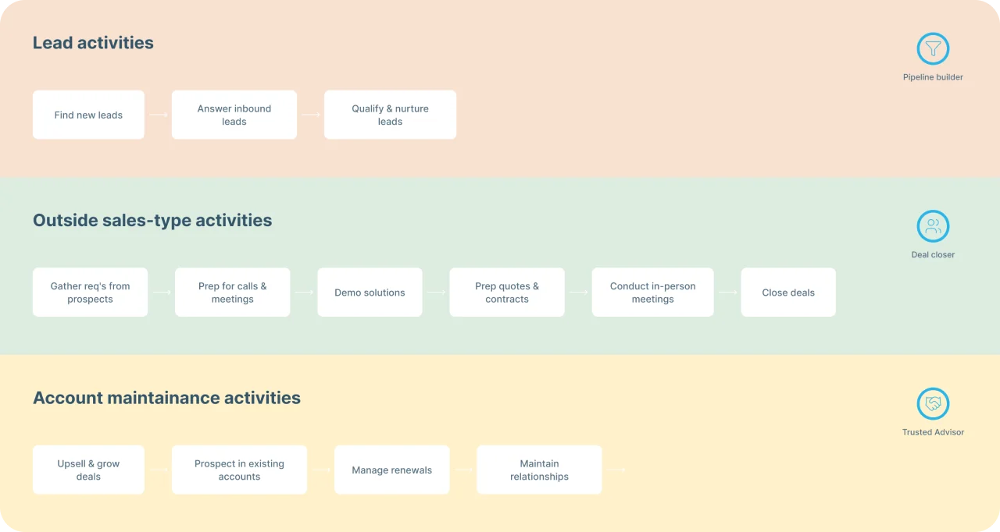
-
Selling is a team sport
Few salespeople do everything in the sales process, so collaboration happens throughout it. Reps needed a simple way to start an internal conversation.
-
Buried in admin work
Most reps couldn’t spend more than 3 hours a day closing. The rest went to account management, finding and nurturing leads, and other admin.
-
The CRM comes first
Updating leads and deal info, and logging events, were reps’ top activities in Salesforce. They needed to do it in context, not in another tab.
-
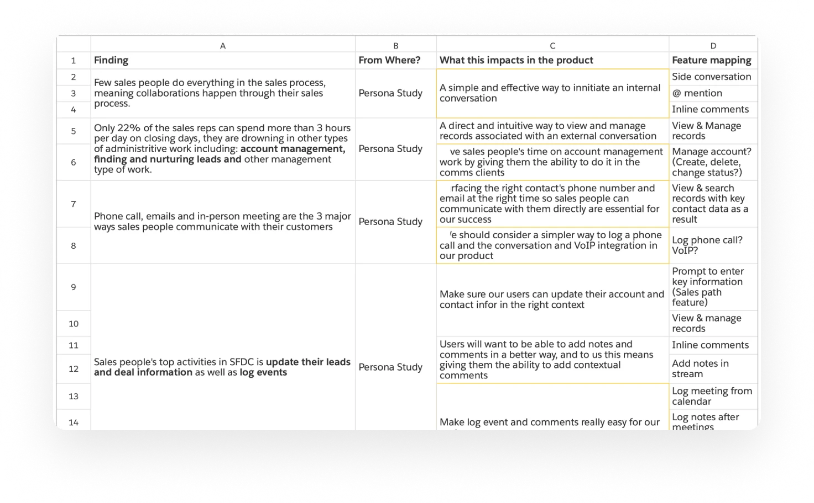
Each research finding mapped to a feature — side conversations, @mentions, inline comments and updating records without leaving email.
From the whiteboard to three concepts
I moderated and gathered the collective ideas from brainstorming sessions to form and pitch high-level solutions.
Low-fidelity wireframes illustrated each concept and communicated it to the team and stakeholders. Three made the final pitch: Communication Hub, Collaborative Email and Intelligent Inbox.
-
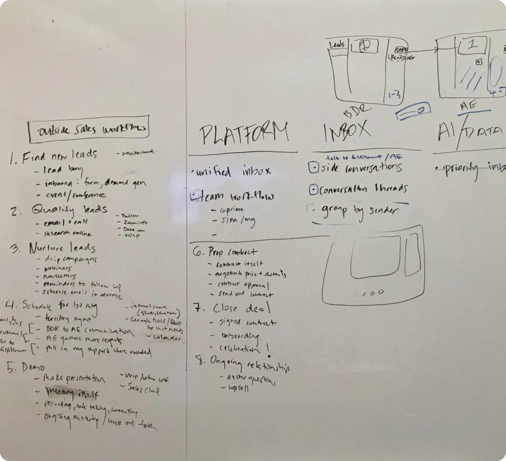
Mapping the outside sales workflow against platform, inbox and AI/data opportunities. -
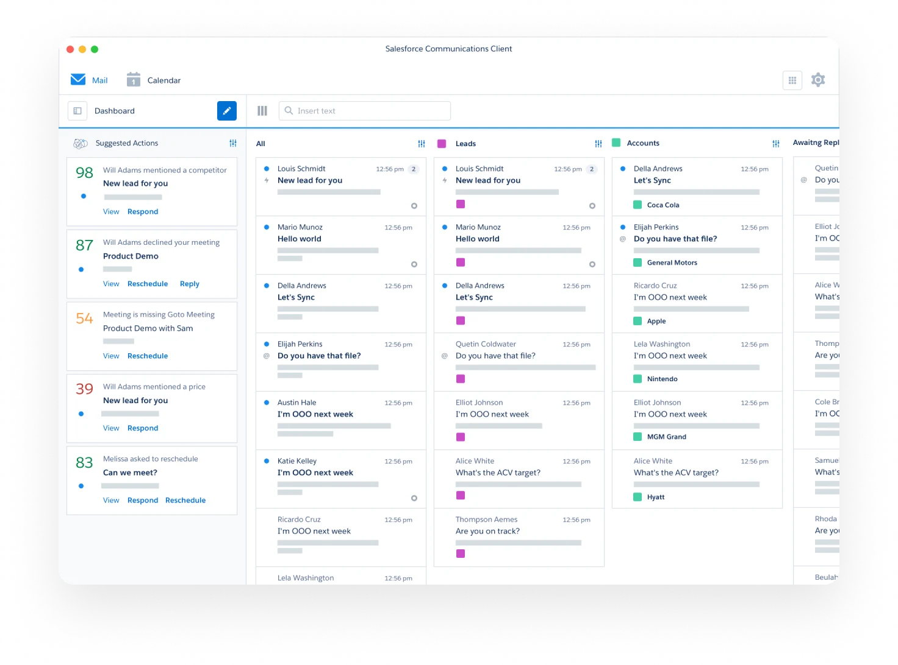
-
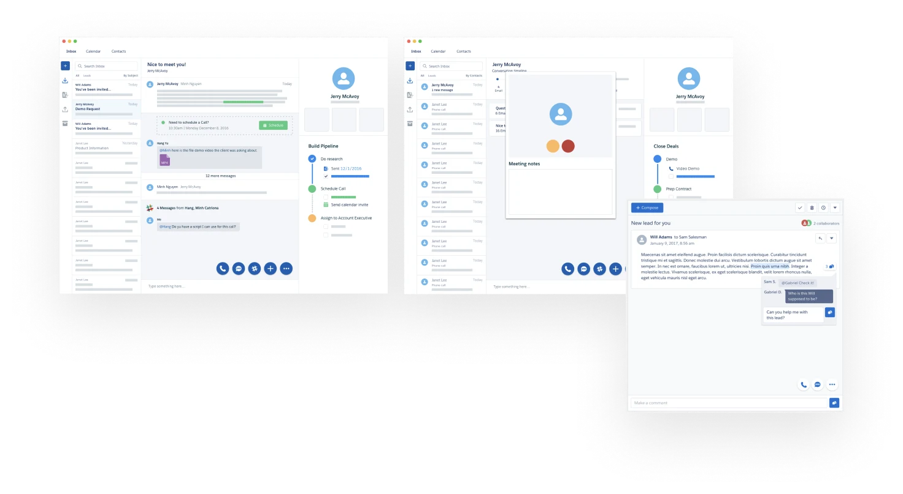
An AI-powered inbox for sales
Moving forward with the idea of an AI-powered inbox, a user journey map identified points of opportunity. The backend team helped us understand how machine learning and natural language processing could sift through emails and surface relevant CRM data and suggestions, so reps could target and prioritize.
What we heard from reps
- “Currently I eyeball where to start. It would be great to see which emails correspond to active deals, high ACV (Annual Contract Value), are overdue.”
- “I don’t want to get distracted by internal emails and other non-ACV generating stuff.”
AI touchpoints
The journey map traced where signals like pricing questions, contract requests and meeting changes show up in email, and what a rep would do next.
-
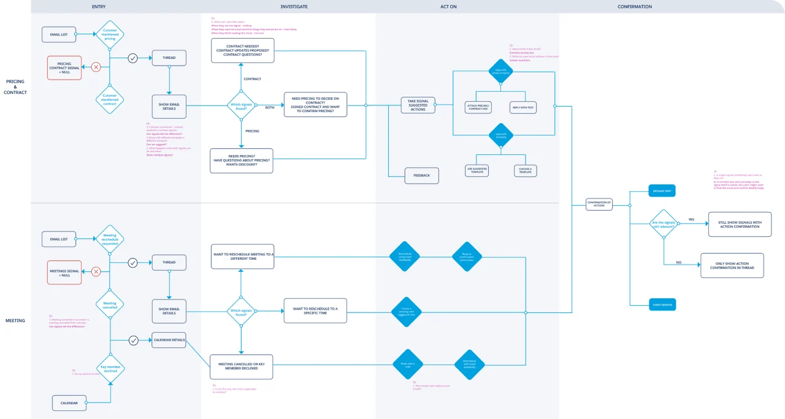
One framework for every signal
Each suggestion pairs the record it’s tied to with the context that triggered it, so a single pattern could cover pricing, contract and meeting signals.
-
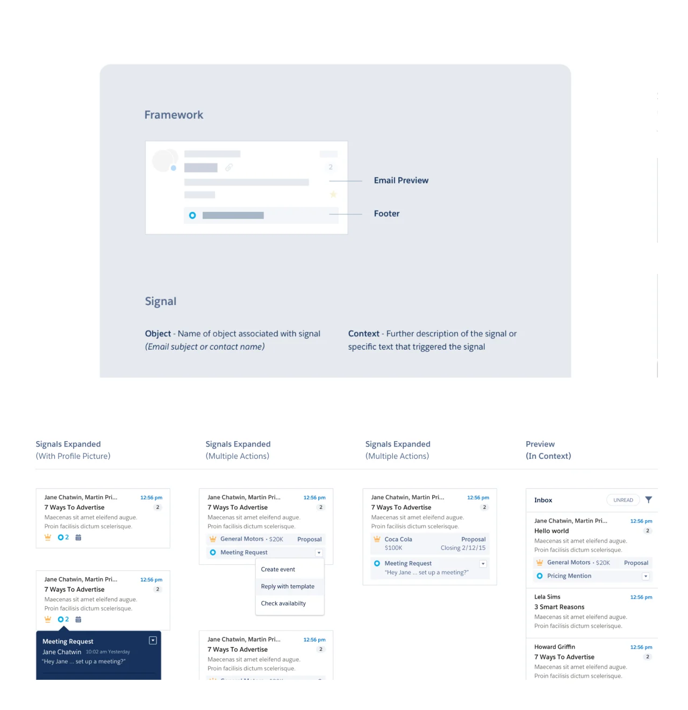
Priority inbox
Einstein ranks email by deal impact and says why, with the account, deal size and stage beside each thread.
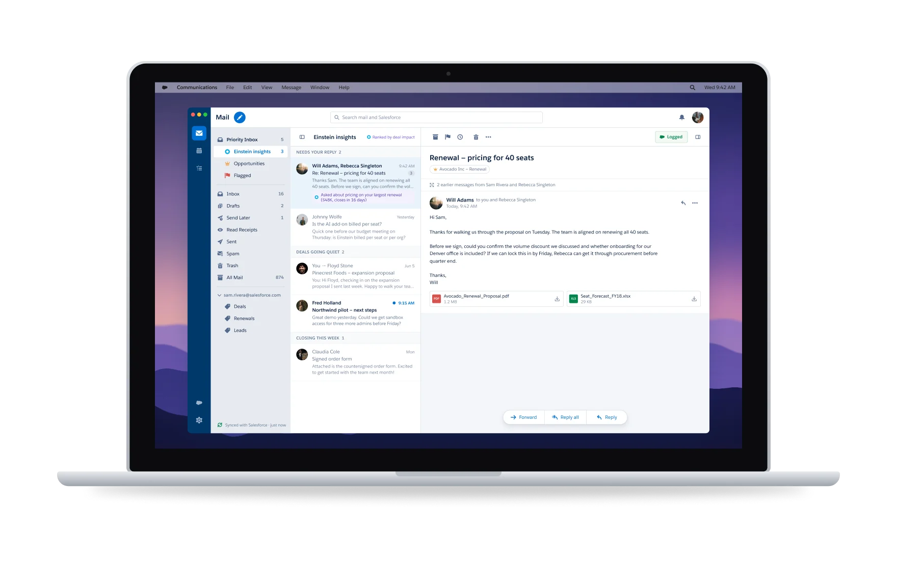
Read receipts and smart compose
Einstein finishes a reply with numbers pulled from Salesforce and shows where they came from. Read receipts show when a buyer opens the email, so reps can follow up while they’re reading.
-
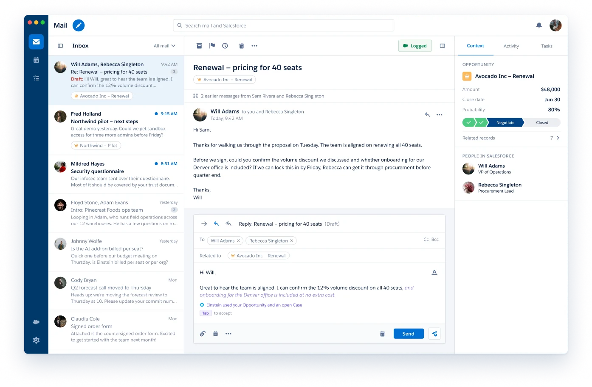
-
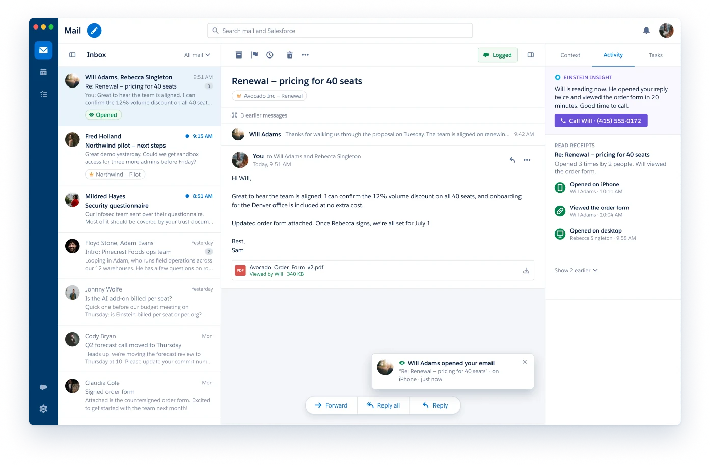
-
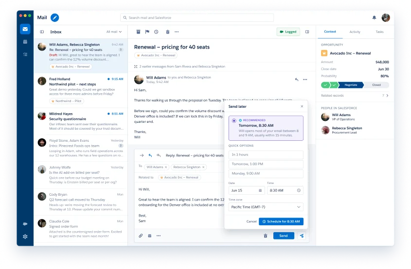
Send later
Einstein suggests a send time based on when this person usually reads email.
-
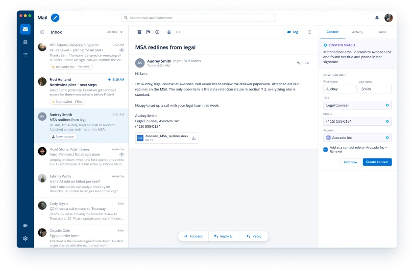
New person
A new contact is drafted from their email signature, matched to the right account.
A calendar that knows the deal
Meetings tied to a Salesforce record show the deal, who’s coming and what’s still open. Add a contact’s calendar and Einstein suggests one time that works for both of you.
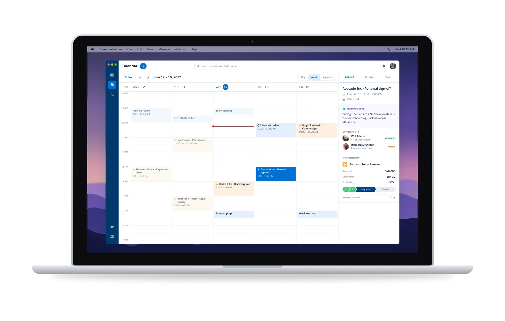
Results
- Company re-organization
- The product was integrated into the core Sales Cloud application
Learnings
- Launch faster with a mobile app
- Have the architecture conversation earlier